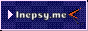

haii, im Mia! a programmer from the uk. i love tinkering with random hardware, especially older pieces. I'm a catgirl of chaos who loves Linux, photography, and retro gaming + tech.
I'm a Developer, pansexual MtF transgender girl. My pronouns are She/Her.
My webring icon:
The HTML and CSS for this website were created entirely by 507131 and is based off of her Scattergun template.